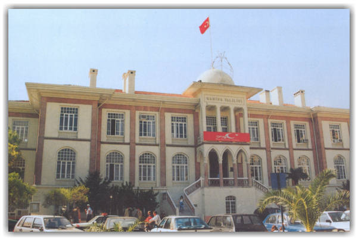

Son Güncelleme 7 Mayýs 2001
GENELBÝLGÝLER
ÝLETÝÞÝM
PROJELER
ARAMA

MANÝSA'DA GEÇEN HAFTA
MANÝSA'DA BU HAFTA
ULUSAL EÐÝTÝME DESTEK KAMPANYASI PROJESÝ 19 MAYIS’TA BAÞLAYACAKTIR
2001 Yýlý Uluslararasý Karayolu Trafik Güvenliði Haftasý
ÝL GENEL MECLÝSÝ MAYIS AYI OLAÐAN TOPLANTISININ ÝLKÝ YAPILDI
Saðlýk Ocaðý açýlýþý
ÝÇME SUYU ÝNÞAATLARI ÝÇÝN 7 MÝLYAR LÝRALIKLIK 24,5 TON MUHTELÝF DEMÝR ALINACAKTIR
Mesir Ýlköðretim Okulu, Okul Aile Birliði ve Koruma Derneði Üyeleri ziyareti
KÖYLERE ÝÇME SUYU YATIRIMLARI DEVAM EDÝYOR
“uyuþturucu” konulu panel
SARUHANLI GÜMÜLCELÝ ÝLKÖÐRETÝM OKULUNA BAHÇE DUVARI YAPILACAKTIR
Akhisar Organize Sanayi Bölgesi Müteþebbis Heyeti Toplantýsý
OKUL AÝLE BÝRLÝKLERÝ, YARDIMA MUHTAÇ ÇOCUKLAR YARARINA KERMES DÜZENLEDÝ
Kafeterya açýlýþý
MANÝSALILAR YARDIMLAÞMA VE DAYANIÞMA DERNEÐÝ VESTEL MANÝSASPORLU FUTBOLCULARA TELEVÝZYON HEDÝYE ETTÝ
Ýl Daimi Encümen Toplantýsý
7 MÝLYAR LÝRALIK AKARYAKIT ALINACAKTIR
542. Akhisar Çaðlak Festivali
SELENDÝ-TAVAK KÖYÜNE DEVLET-VATANDAÞ ÝÞBÝRLÝÐÝYLE OKUL YAPILACAKTIR
Bir Efsane zeki Müren Konseri
KULA-ÇARIKBALLI KÖYÜNDE HAYIRSEVERLERDEN OKUL YAPIMI ÝÇÝN ARSA BAÐIÞI
DEVLET BAKANI DR. YÜKSEL YALOVA MANÝSA'YI ZÝYARET ETTÝ
HIDRELLEZ KÜLTÜR-BAHAR BAYRAMI KUTLANDI
Bu sitenin teknik desteði
Niobeweb
tarafýndan saðlanmaktadýr.